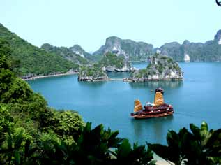

FAMILIEREJSER
Jeg har rejst hele mit liv og husker, hvordan mine forældre for mange år siden tog min søster og mig til fjerne og eksotiske rejsemål. Derfor var det helt naturligt, da jeg selv fik børn, at de skulle med ud og opleve verden.
Jeg har rejst med mine tre børn, siden de var helt små. Som regel har jeg taget dem med til Asien, Mellemøsten og andre lande, hvor for-holdene er anderledes og udfordringerne større. Det er sådan, vi kan lide det, men jeg har aldrig haft behov for at være på “overlevelsestur” med mine børn.
Tryghed er vigtigt
Vores behov for tryghed er større, når vi rejser med vores børn. Hotelstandarden skal være lidt højere, restauranterne lidt renere, transporten lidt mere velorganiseret.
Vores familierejser tager udgangspunkt i vores erfaringer med at rejse med børn.
At opleve verden skaber nysgerrige børn
Vi har sammensat en håndfuld rejser for børnefamilier, der prioriterer en rejse, som pirrer både børnenes og de voksnes nysger-righed, samtidig med at rammerne er trygge og organiseret hjemmefra.
Destinationerne er eksotiske, spændende, udvalgt efter sikkerhed, sol og varme og muligheden for at sammensætte varierede dagsprogrammer, som børn i forskellige aldre vil elske.
En familierejse handler i høj grad om at være sammen. Men i min optik lige så meget om at få børnene til at kigge sig omkring. Give dem en forståelse for, at livet kan leves på andre måder end dem, vi er vant til. Det er en ballast, jeg som forælder er glad for at have givet mine børn.
Ta’ børnene med og gør jeres verden større.
Vælg din rejse med omhu
- det fortjener du og din familie!
Peter Frederiksen
Ejer af Horisont Rejser


REJS MED EGEN GUIDE
På vores familierejser er det kun jeres familie, der rejser sammen. Med på rejsen har I jeres egen lokale, engelsktalende rejseleder, der står for det praktiske men som også sikrer, at rejsen bliver en oplevelse både for børnene og de voksne.
I har flere dage uden guide, hvor I kan nyde swimmingpool eller slappe af i jeres eget tempo.
KUNDETILFREDSHED
Vi har spurgt vores kunder, hvad de synes om vores rejser. På en skala fra 1-5, hvor 5 er det bedste, giver vores kunder os en bedømmelse på 4,8. Det er vi rigtig glade for.
VIETNAM
Familierejsen til Vietnam er blandt vores mest populære rejser for familier med børn.
Rejsen indeholder mange højdepunkter, bl.a. besøg hos en vietnamesisk familie i charmerende Hanoi. Her mærker I den vietnamesiske gæstfrihed og ser, hvordan en almindelig familie lever.
Glæd jer ligeledes til den smukke sejltur i Ha Long-bugten, hvor I overnatter på skibet og kan nyde den stille aften og morgen i bugten, omgivet af de vidunder-lige kalkstensbjerge.

SRI LANKA
Familierejsen til Sri Lanka er tilrettelagt med tre opholdssteder. På dags-ture oplever I tidligere kongebyer, hvor man fornemmer landets historiske dybde, kommer til Anuradhapura med det gamle Bo-træ og til Sigiriya, hvor Kong Kasyapa byggede sin særprægede løveborg på en klippetop.
I bor bl.a. i det smukke Kandy, den gamle kongeby med Tandens Tempel. I besøger kokosplantager og hører om teproduktion, og så skal I naturligvis opleve det rige dyreliv i de frodige nationalparker.
Rejsen slutter ved stranden b.a. med besøg på et skildpadde-center og med mulighed for en sejltur, hvor I kan observere blåhvaler.
MAROKKO
Vi har sammensat en meget alsidig familierejse til Marokko, der kombi-nerer det farvestrålende Marrakech med ophold i den smukke Sahara-ørken. I ørkenen overnatter I på et lille ørkenhotel med udsigt over det smukke ørkenlandskab. Der er mulighed for at forlænge rejsen med ophold i Agadir, hvor I kan nyde stranden og det varme klima.
JORDAN
På vores familierejse i Jordan bevæger I jer gennem den smukke ørken med de enorme hvide sandyner så langt øjet rækker - lige indtil I når jeres ørkencamp. Her skal I spise aftensmad under den mørke, stjerneklare himmel, inden I falder til ro efter en lang og spændende dag.
Vi har indlagt dage ved Aqa-ba-bugten, hvor I kan nyde stranden og høre historien om Aladdin, der netop kom fra disse kanter. Og så besøger I det smukke Petra.
Turens mange højdepunkter rundes af med et par dage på et skønt hotel direkte ned til Det døde Hav.